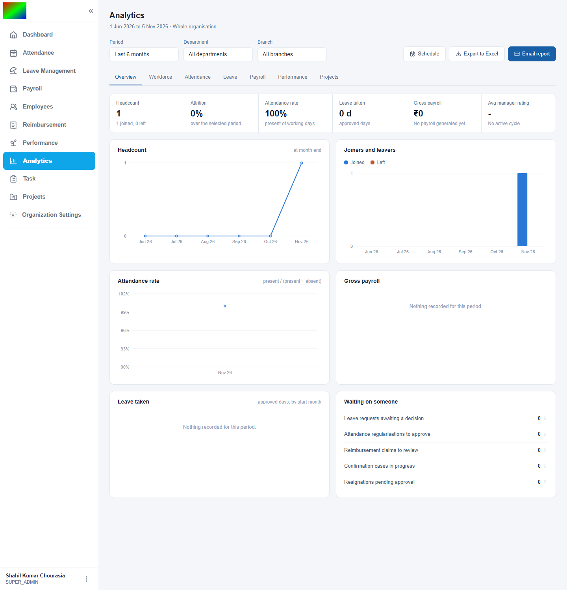
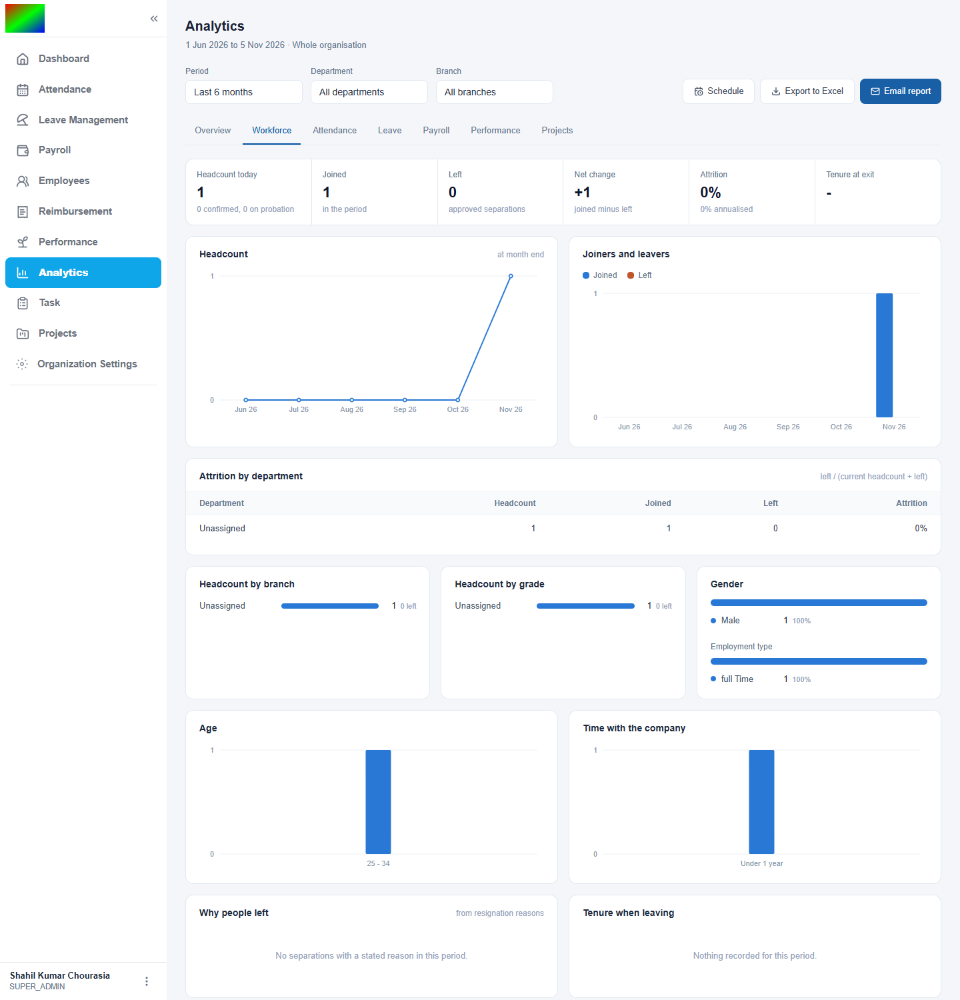
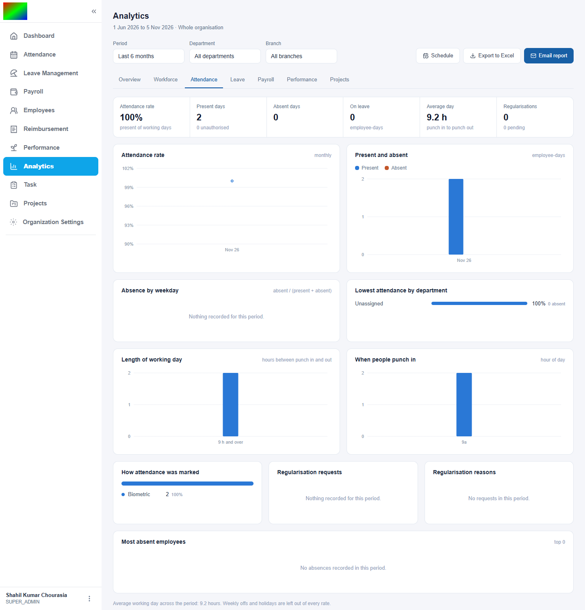
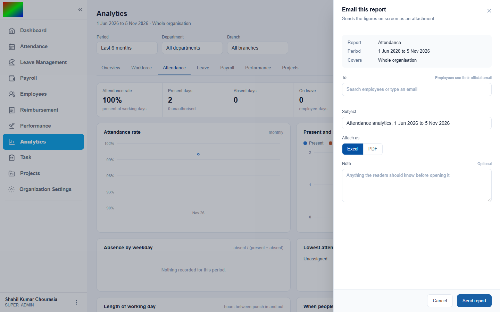
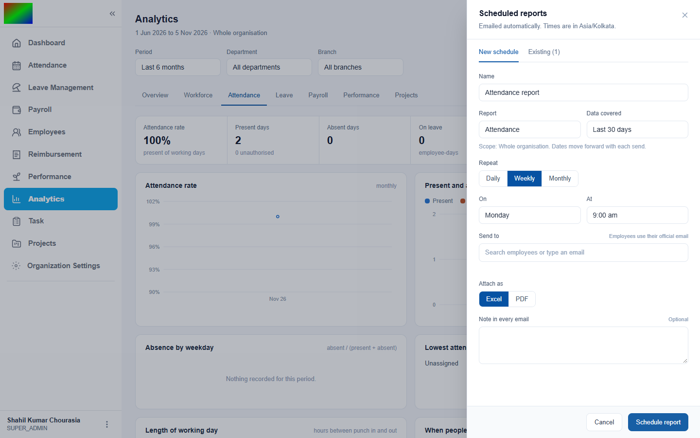

Seven report tabs answer the questions HR and management ask most. Each can be filtered, downloaded as Excel, emailed straight away, or scheduled to be emailed on a rhythm. This page covers how to use it, what to set up, and how the backend works.
Analytics is a read-only layer. It adds no tables for the figures. Each tab asks the existing attendance, leave, payroll, appraisal and project data a set of questions.
| Tab | Questions it answers |
|---|---|
| Overview | Headcount, attrition, attendance rate, leave taken, gross payroll and rating at a glance. Six trend charts, and what is waiting on someone: leave, regularisations, reimbursements, confirmations, resignations. |
| Workforce | Joiners, leavers and net change. Attrition for the period and annualised. Headcount by department, branch and grade. Gender, employment type, age, time with the company, why people left and how long they stayed. |
| Attendance | Attendance rate, present, absent and on-leave days, average working day, absence by weekday, lowest-attendance departments, hours distribution, punch-in times, how attendance was marked, regularisations, most absent employees. |
| Leave | Requests and approved days, approval rate, requests pending over three days, usage by type and by department per employee, the weekday leave starts on, most leave taken, balance used against balance assigned. |
| Payroll | Gross and net pay, employer contributions, loss-of-pay days, payslips published, deductions by type, cost by department, pay bands and ranges by grade. Plus reimbursements: spend, approval rate and time to decide. |
| Performance | Appraisal completion, manager and self ratings and the gap between them, rating distribution, scores per key result area, rating across cycles, probation confirmations. |
| Projects | Open, overdue and unassigned tickets, completion rate, time logged, tickets by type and priority, sprint velocity, task throughput. |
Click Analytics in the sidebar. Choose last 30 days, 3, 6 or 12 months, this financial year (April to March), or custom dates. The Performance tab also offers an appraisal cycle.

Both filters apply to every tab, so the same view of the organization is used throughout.

The strip at the top gives the headline figures and the charts and tables below explain them. Hover a chart to see exact values.

Export to Excel, Email report and Schedule sit at the top right of every tab.
The drawer starts with a summary of exactly what will be sent. The email carries the headline figures in its body and the full report as an attachment.

| Field | What to enter |
|---|---|
| To | Type a name or employee ID and pick the person, and their official email is used. Any address can also be typed. Up to 20. |
| Subject | Starts as the report name and period. |
| Attach as | Excel has every row. PDF shows the first 40 rows of each table. |
| Note | Optional text above the figures. |

| Field | What to enter |
|---|---|
| Name | Your own label. |
| Report | The tab to send. |
| Data covered | Last 7 days, 30 days, 3 months, 6 months, or the previous calendar month. The window always ends yesterday, so only finished days are included. |
| Repeat | Daily, weekly or monthly. |
| On | A weekday, or a day from 1 to 28 so a monthly schedule runs in every month. |
| At | The hour of the day, in the organization's timezone. |
| Send to, Attach as, Note | The same as for Email report. |
Each schedule can be sent right now, paused, resumed or deleted, and shows its next run, last run, and the reason a send failed. An organization can keep up to 25 schedules.
| Item | Why it matters |
|---|---|
| Permission: View Analytics | Given to a role in Roles and Permissions. The data is organization-wide, so give it to HR and management. |
| Analytics in the plan | The module is part of the paid plans. A plan without it hides the sidebar item. |
| An active subscription | An expired subscription stops the module list refreshing, so a new module may not appear. |
| Email set up on the server | Needed for Email report and Schedule. Without it Flowdesk says so and never reports a failed send as sent. |
| Official emails on employees | Needed to pick people by name. Any address can still be typed. |
| Figure | How it is calculated |
|---|---|
| Headcount | Employees whose status is not separate. An employee with no status counts. |
| Attrition | People who left in the period divided by the average headcount at month end. The annualised figure scales it to a year. |
| Attendance rate | Present days divided by present plus absent days. Week offs, holidays and leave are left out. |
| Leave taken | Approved leave days, counted by the month the leave starts in. |
| Trends | One point per month, and per day when the period is 62 days or less. A month with no data shows as zero. |
analytics_viewAll ten routes need it.| Route | Purpose |
|---|---|
| GET /api/analytics/:section | One tab, with period, department and branch. |
| GET /api/analytics/export/:section | An Excel workbook: a Summary sheet and one sheet per table. |
| GET /api/analytics/filters | Departments, branches, cycles, today and the timezone. |
| GET /api/analytics/recipients | Employees with an official email, searchable. |
| POST /api/analytics/send-report | Builds Excel or PDF and emails it now. |
| /api/analytics/schedules | List, create, pause or resume, send now, delete. |
The charts are drawn by hand in SVG, with no chart library: a bar and line chart with hover values, ranked bar lists and a split bar. Axes use whole-number steps for counts. One page component holds a tab per section, with filters shared across tabs. Email and Schedule open as side drawers.
The ISO date rule rewrites a value to a full timestamp before a length check, so a plain 2026-01-01 failed. It appeared only when the endpoint was called over HTTP.
A strict YYYY-MM-DD pattern plus a calendar check.
A chart of two or three people got half-steps, and rounding printed 0, 1, 1, 2, 2.
When every value is a whole number the step is at least one.
The condition emp_status <> 'separate' is false for employees with no status, so headcount, gender and age read zero.
IS DISTINCT FROM 'separate' in all nine places.
The subscription had expired, so the list of the plan's modules returned 404. The app ignored that and kept an older saved list without Analytics.
Extending the subscription refreshes the list. The lesson: a saved permission list that survives a failed refresh can hide a new module indefinitely.
Analytics is organization-wide, so a manager cannot yet be limited to their own team. Queries run live on every request. The attendance-rate axis can show a value above 100 percent when the data sits near the top, a cosmetic flaw that is still open. A schedule saves recipient addresses as they were when it was created. The screenshots come from a small development organization.